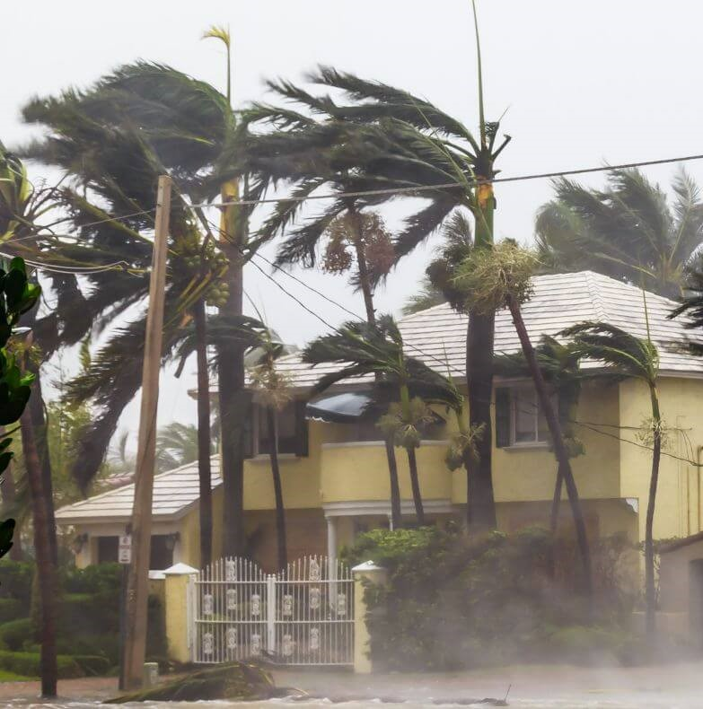

L'ouragan Katrina de 2005 a dévasté la Nouvelle-Orléans et d'autres
régions du golfe du Mexique, causant des destructions massives. Des milliers
de personnes ont perdu la vie, et des millions d'autres ont été déplacées en
raison des inondations.
Les tempêtes tropicales sont principalement alimentées par des
températures de l'eau plus élevées, causées par le réchauffement climatique.
Elles se forment dans des zones où les températures océaniques dépassent
les 26°C, favorisant leur intensification. L'impact de ces tempêtes grandit
en raison de l'élévation du niveau de la mer, des fortes pluies et des vents
plus puissants, menaçant les zones côtières et augmentant les risques de
destructions massives.